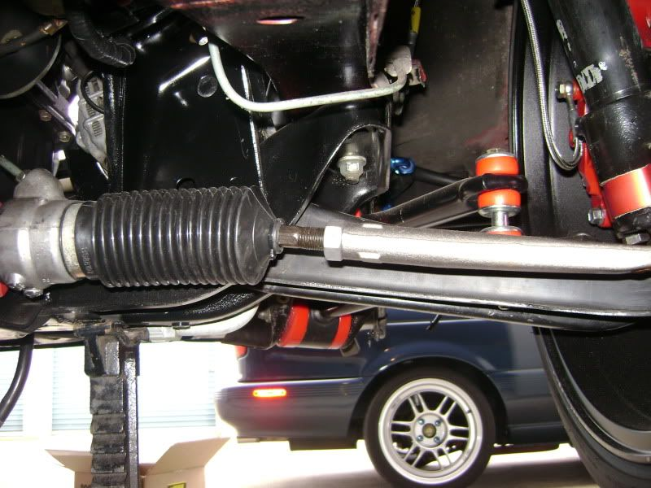
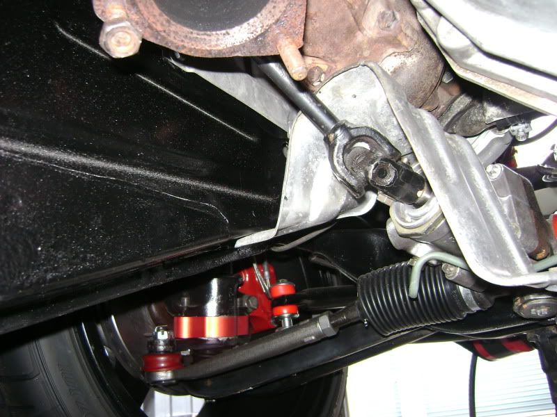

-
Re: Has anyone found "Bump Steer Spacers"
The V1: Is the single piece version that corrects your steering geometry when you lower your car.reddzx wrote: What's the difference between V1 and V2?
This has had some troubles rubbing the rotors and production was stopped. It seems to work with the later rotors that slip over the hub instead of bolting on the back.
http://www.z31parts.com/images/strutspacers.JPG
The V2 addresses the problem of rubbing the rotor by making it in two sliding pieces. This allows for some camber adjustment as well as correcting the steering geometry.
[attachment=0:3uciybr7]V2 bumpsteer 019 (Medium).jpg[/attachment:3uciybr7]…and how much HP do you have at 0 boost -
Re: Has anyone found "Bump Steer Spacers"
Russ, what is the estimated cost for the v2? I am kinda press on money for some tooling for the shop so hopefully I can squeeze the v2 in my budget.Sbsperformance-cylinder head service and porting specialist. Shoot me a pm for porting specials and now offering a low low price for intake manifold porting! Now offering ceramic and thermal dispersant coating! -
Re: Has anyone found "Bump Steer Spacers"
For the zenki guys wanting to run the v1's its just simply removing the lip of the lca and it wont rub. I had a few people confirm this for me on the last run I did for Jason."Its the s12's sexy over weight step daughter, the z31" -
Re: Has anyone found "Bump Steer Spacers"
still in for the v1's


1988 300zxt. gt35, stance, etc. Wheels: Varrstoen ES2 18x9.5 et-13 225/40. 18x10.5 et0 245/40
1990 jetta vr6'd -
Re: Has anyone found "Bump Steer Spacers"
Any new about it, Iam in for V1 at any time about now -
Re: Has anyone found "Bump Steer Spacers"
I'd like a set of V2's.Zoey - 1987 Z31T GLL - HKS EVC / CM SS 3" turbo-back / Stance GR+
Black Betty - 2014 Audi C7 S6 APR1 -
Re: Has anyone found "Bump Steer Spacers"
Here is what the bump steer spacers do for your car. My car has Type2 Z3R springs and this with the engine and trans and such in the car with the wheels on the ground.


Now compare that to DeleriousZ's suspension shot.
1986 300ZX Turbo…sold
1990 Skyline GT-R…new money pit
2014 Juke Nismo RS 6-speed…daily -
Re: Has anyone found "Bump Steer Spacers"
You have me down for the V2's or should I PM you directly?
Build thread http://z31performance.com/showthread…-Paint-done-eh -
Re: Has anyone found "Bump Steer Spacers"
Still waiting for the machinist to get the set back to me for final approval. I will check the this thread and post when they are ready as well as PM everyone that has sent me a message and/or posted on this thread.
As for what they will do in NissanEgg's post: The normal angle of the front control arm is about 5 degrees sloping down toward the wheel. As you lower the car this changes to a flatter angle. On my car it was lowered to the point where the control arm was angled down toward the engine. The handling was really bad. With the V1 spacers I corrected it to level and it made a huge difference in the handling. Then I raised the car a bit and it became even better.
The Car I put the V2 spacers on was lowered and they corrected the angle back to the stock angle. Much better handling.…and how much HP do you have at 0 boost -
Re: Has anyone found "Bump Steer Spacers"
Load paths, suspension and steering geometry (and pushrod/pullrod if applicable) is all about the angles between the various members. When the car is lowered and your lower arm is sloped in and down like Russ mentioned, the angle between the upright and lower arm is more than 90 degrees and increasing. Stock setup approaches 90 in bump. Camber Gain/Loss in bump is what we are talking about here. IMHO this is the biggest factor in the degradation in the handling of the car. I don't think that the bump steer changes all that much due to being lowered, of course i could be mistaken here, as i have never measured it. -
Re: Has anyone found "Bump Steer Spacers"
Any word yet Russ??
-
Re: Has anyone found "Bump Steer Spacers"
Yes. Go here for informationRB20ZR wrote: Any word yet Russ??
http://z31performance.com/forum/vie … 12&t=31728…and how much HP do you have at 0 boost -
Re: Has anyone found "Bump Steer Spacers"
Received the material today for the v1's and will be started this week! If you have pmed me already for your set I will be doing a followup response."Its the s12's sexy over weight step daughter, the z31" -
Re: Has anyone found "Bump Steer Spacers"
Change in group buy structure due to confusion in the way it was put together. Go to this thread to see changes.
viewtopic.php?f=12&t=31728&p=365956#p365956…and how much HP do you have at 0 boost -
Re: Has anyone found "Bump Steer Spacers"
I have responded to all PM's and when the parts are DONE(aka back from ano) I will ask for payment but hold onto your funds until then."Its the s12's sexy over weight step daughter, the z31"

{kind=link}
Copyright © 2006–. All rights reserved. Privacy Policy